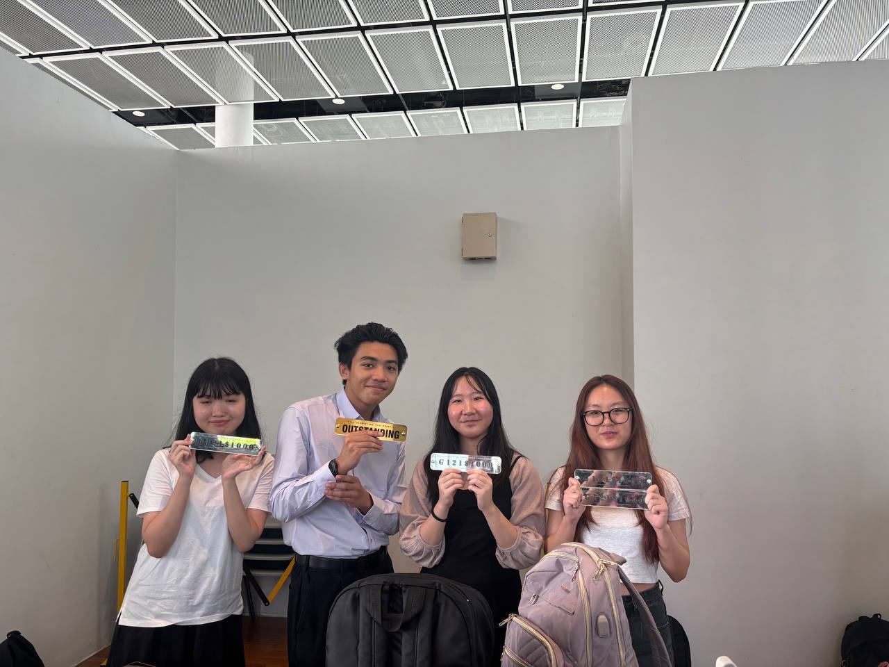
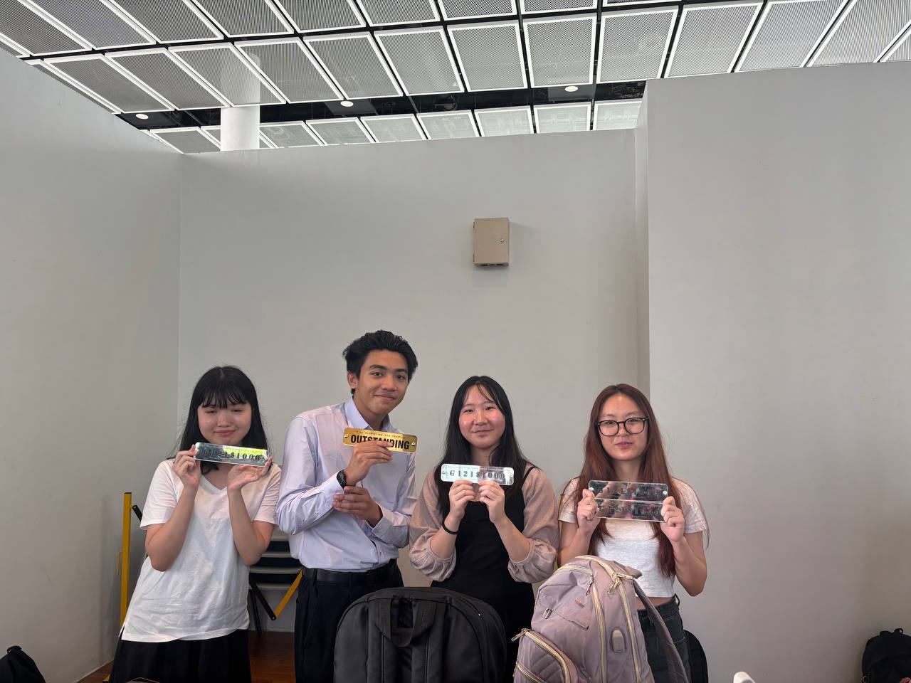
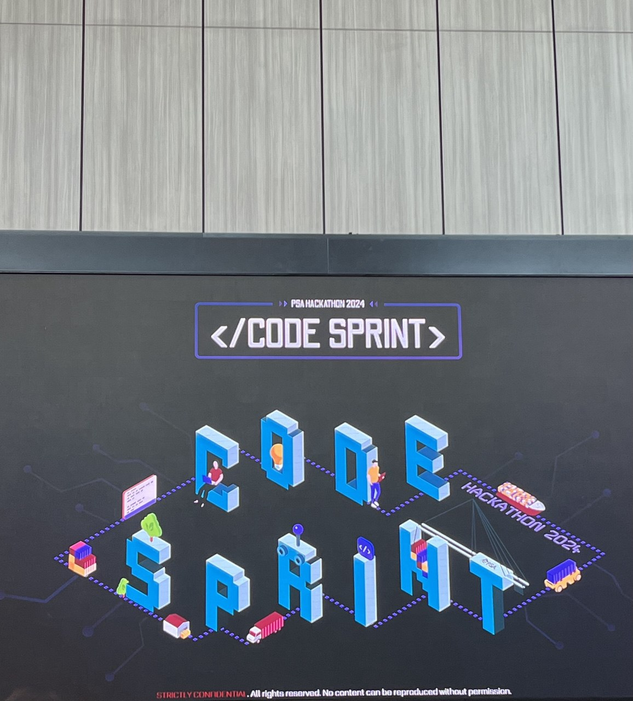
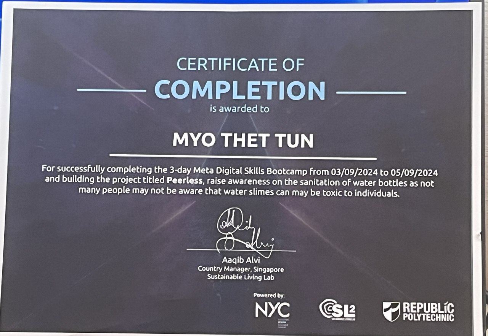
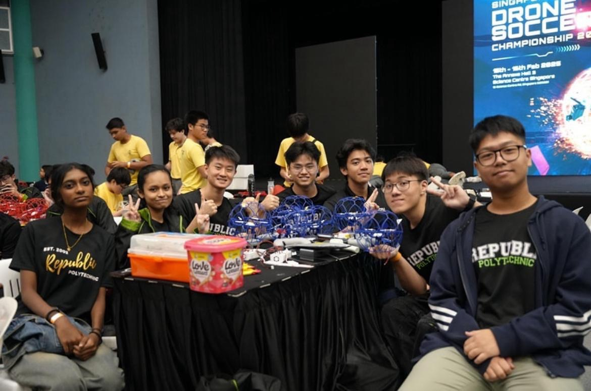
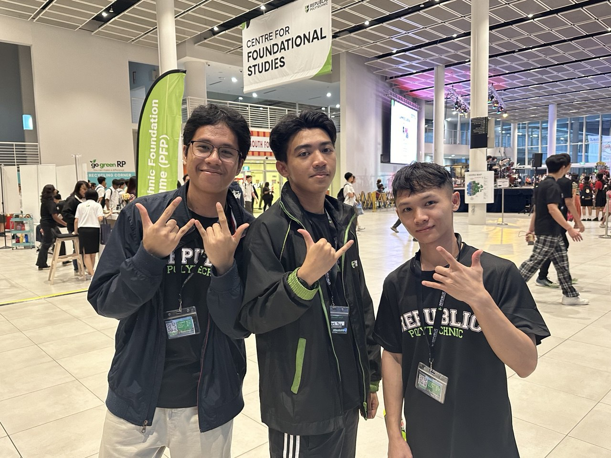

Sustainability Hackathon Winner
 

Republic Polytechnic organized a module called G121 Innovation and Practice, where students were tasked with selecting one of the Sustainable Development Goals (SDGs) and developing an innovative solution to address it. Our team chose the Quality Education goal and created an application called HushWave. This app is designed to enhance learning by providing a more focused and distraction-free environment. Our innovative approach and the potential impact of HushWave earned us the prestigious Outstanding Innovation Award, which is granted only to the few teams with groundbreaking ideas that have the potential to make a significant impact.
Codesprint PSA Hackathon

I was able to represent as my school ( Republic Polytechnic ) to be able to compete in the PSA's hackathons where I had to compete as the team with the various Universities such as NTU, NUS. This hackathon was one of the toughest yet exciting hackathon for me as such I was able to get a lot more experiences and new tech skills.
Meta Digital Skills Bootcamp

I was introduced to the Republic Polytechnic bootcamp, where I embarked on a journey to learn programming. One of my biggest goals was to create a meaningful project, and achieving that now fills me with joy and hope. During the bootcamp, I worked on a project that utilized digital tools and technology to address real-world challenges. Specifically, our project focused on using digital solutions to tackle issues related to clean water and sanitation, helping to raise awareness and provide innovative ways to ensure access to safe and sustainable water sources for communities in need.
2025 Feb Drone Soccer Championship

I had the opportunity to represent Republic Polytechnic in a drone soccer competition, competing against teams from other polytechnics, secondary schools, and even national teams. As a member of RP Falcons,I took on the role of striker, where my primary responsibility was to maneuver the drone strategically and score as many goals as possible.It was an intense yet rewarding experience that honed my teamwork, precision, and quick decision-making skills.
2025 Republic Polytechnic's Open House

Republic Polytechnic's main goal for the Open House is to showcase the school's activities, CCAs, national teams, and diploma programs to prospective students.I was honored to be selected as a representative, Emcee, and competitive drone demonstrator for the Drone Soccer Organization,where I had the opportunity to engage with visitors, introduce them to the world of drone soccer, and demonstrate the skills and strategies involved in the sport. It was an exciting experience that allowed me to share my passion for technology and competition while representing RP.